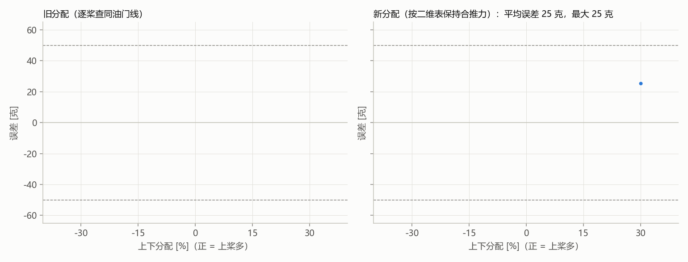

新分配 1 点：平均误差 25 克，最大 25 克，平均偏 +25 克。误差 = 实测合推力 − 目标合推力。停止原因：completed。表：c493194dbb35。

| 序号 | 分配 | 目标合推力 [克] | 上下分配 [%] | 上油门 [%] | 下油门 [%] | 电量 [V] | 实测 [克] | 误差 [克] | 二维表预测 [克] | 备注 |
|---|---|---|---|---|---|---|---|---|---|---|
| 1 | 新 | 899 | 30 | 74.6 | 48.4 | 12.44 | 924 | 25 | — | |
| 2 | 旧 | 899 | 30 | — | — | 12.60 | — | — | — | 当前电量下查不到或已饱和 |
| 3 | 旧 | 505 | -30 | — | — | 12.60 | — | — | — | 当前电量下查不到或已饱和 |
| 4 | 新 | 505 | -30 | — | — | 12.65 | — | — | — | 当前电量下查不到或已饱和 |
| 5 | 新 | 1294 | 15 | — | — | 12.65 | — | — | — | 当前电量下查不到或已饱和 |
| 6 | 旧 | 1294 | 15 | — | — | 12.65 | — | — | — | 当前电量下查不到或已饱和 |
| 7 | 旧 | 899 | -15 | — | — | 12.65 | — | — | — | 当前电量下查不到或已饱和 |
| 8 | 新 | 899 | -15 | — | — | 12.65 | — | — | — | 当前电量下查不到或已饱和 |
| 9 | 新 | 505 | 15 | — | — | 12.65 | — | — | — | 当前电量下查不到或已饱和 |
| 10 | 旧 | 505 | 15 | — | — | 12.65 | — | — | — | 当前电量下查不到或已饱和 |
| 11 | 旧 | 1294 | -30 | — | — | 12.65 | — | — | — | 当前电量下查不到或已饱和 |
| 12 | 新 | 1294 | -30 | — | — | 12.65 | — | — | — | 当前电量下查不到或已饱和 |
| 13 | 新 | 899 | 15 | — | — | 12.65 | — | — | — | 当前电量下查不到或已饱和 |
| 14 | 旧 | 899 | 15 | — | — | 12.65 | — | — | — | 当前电量下查不到或已饱和 |
| 15 | 旧 | 505 | -15 | — | — | 12.65 | — | — | — | 当前电量下查不到或已饱和 |
| 16 | 新 | 505 | -15 | — | — | 12.65 | — | — | — | 当前电量下查不到或已饱和 |
| 17 | 新 | 1294 | 30 | — | — | 12.65 | — | — | — | 当前电量下查不到或已饱和 |
| 18 | 旧 | 1294 | 30 | — | — | 12.65 | — | — | — | 当前电量下查不到或已饱和 |
| 19 | 旧 | 899 | -30 | — | — | 12.65 | — | — | — | 当前电量下查不到或已饱和 |
| 20 | 新 | 899 | -30 | — | — | 12.65 | — | — | — | 当前电量下查不到或已饱和 |
| 21 | 新 | 505 | 30 | — | — | 12.65 | — | — | — | 当前电量下查不到或已饱和 |
| 22 | 旧 | 505 | 30 | — | — | 12.65 | — | — | — | 当前电量下查不到或已饱和 |
| 23 | 旧 | 1294 | -15 | — | — | 12.65 | — | — | — | 当前电量下查不到或已饱和 |
| 24 | 新 | 1294 | -15 | — | — | 12.65 | — | — | — | 当前电量下查不到或已饱和 |